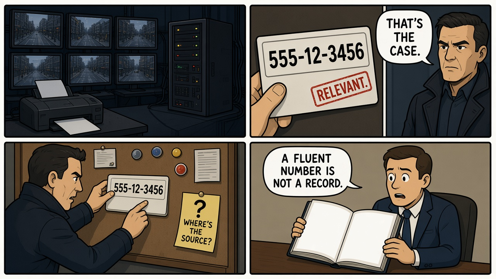
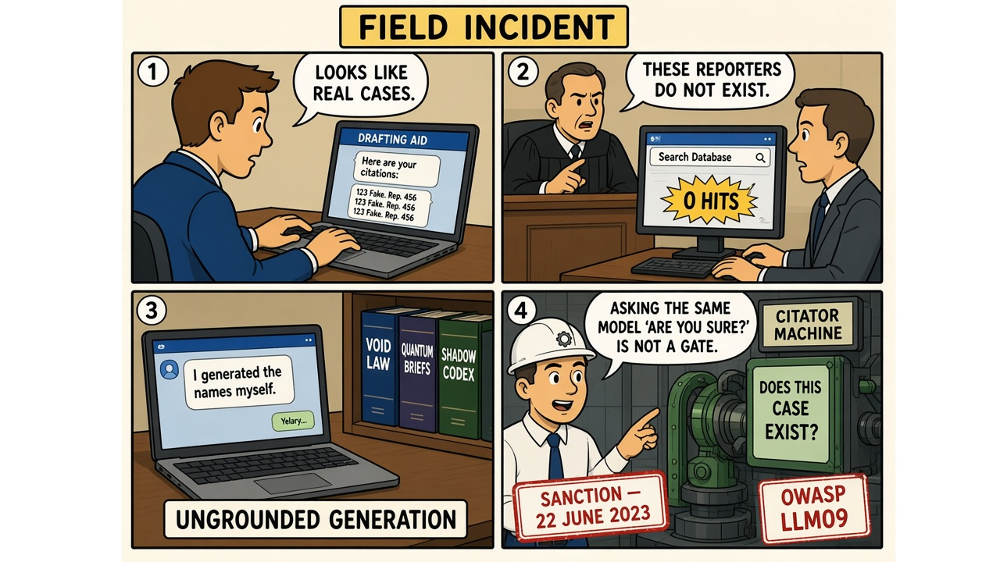

Module 08 / Legal / Knowledge Work Person of Interest (2011–2016)
A fluent number is not a retrieved record. Treating model output as a source is the incident.
The Script — Cinematic Anchor
Dialogue Extract
Scene Visual — Comic Strip

Dramatis Personae → Stack Mapping
- The Machine→A generator (in the field: an LLM) whose outputs look like retrievals
- The Relevant list→A ranked identifier presented without an exhibit
- Reese / Finch→Professionals who act on the identifier — in the field, counsel who file it
- The court / the victim→The institution that still requires real sources
Diegetic Failure Mode
An interface emits a fluent, well-formed identifier and the humans downstream treat it as a fetched record. The show usually blesses that trust. Reality does not.
AI System Stack
The Incident — Empirical Grounding
Field Visual — Comic Strip

Real-World Incident Precedent
Mata v. Avianca, Inc., No. 22-cv-1461 (PKC) (S.D.N.Y. June 22, 2023). Lawyers submitted a brief with multiple nonexistent case citations produced by ChatGPT. They had treated fluent legal prose as if it were a retrieval from the federal reporter. Judge Castel's opinion is the RCA document. A related, not primary, case in the same class is Moffatt v. Air Canada, 2024 BCCRT 149, where a customer-facing chatbot asserted a bereavement-fare policy that was not in the tariff — the company called the bot a "separate legal entity" and lost. That is the policy-grounding cousin; Mata remains this module's incident.
Cinematic vs. Reality Matrix
| Dimension | Media Depiction (The Script) | Field Reality (The Incident) |
|---|---|---|
| Failure Vector | The Machine is depicted as producing true identifiers from real surveillance. | ChatGPT produced false identifiers (case names, citations, quotes) with no retrieval step. The show's Machine does not hallucinate; the field model does. Transfer = "fluent ID ≠ source," not "the Machine was ChatGPT." |
| Time to Impact | A weekly case-of-the-week. | A filed affirmation; days to weeks until opposing counsel and the court fail to locate the cases. |
| Operator Visibility | Finch trusts the number; the audience is told it is real. | Counsel asked the model if the cases were real and were told they were. There was no lookup. |
| Failsafe Behavior | None required — omniscience is the premise. | A citator / "does this reporter cite exist?" gate would have stopped the filing. Asking the same model to confirm is not a gate. |
Root-Cause Analysis (RCA)
Classification: Orchestration / Ungrounded generation + Human over-reliancePrimary root cause is emitting legal citations from a generative model with no retrieval or citator check, then filing them. A contributing human-factors cause is treating the model's reassurance as verification. This is not a RAG failure (RAG was not used) and not an embeddings lecture.
Engineering Runbook & Countermeasures
Eval / Telemetry Envelope
| Parameter | Normal / Baseline | Trip Threshold | Condition at Failure |
|---|---|---|---|
| Citation groundedness | 100% of cited authorities resolve in a citator / corpus | Any citation that does not resolve | Multiple nonexistent cases in the Mata affirmation |
| Quote pinpoint | Quoted text exists at the pinpoint | Quote not in the opinion | Fabricated quotations in the ChatGPT output |
| Self-check ≠ verify | Verification is a different system (Westlaw, CourtListener) | Same model asked "are you sure?" | Counsel's documented ChatGPT follow-up |
Mitigation / Recovery Protocol
- No citation leaves the building without a resolver. API to a citator, or it is not a citation.
- Refuse to invent authorities. If retrieval returns nothing, the answer is "I do not have a case," not a plausible caption.
- Do not use the generator as its own verifier.
- Human filing checklist: every authority opened. The lawyer's name is still on the brief.
- Product copy: this is a drafting aid, not a source. OWASP LLM09 is misinformation; the user-facing lie is calling it research.